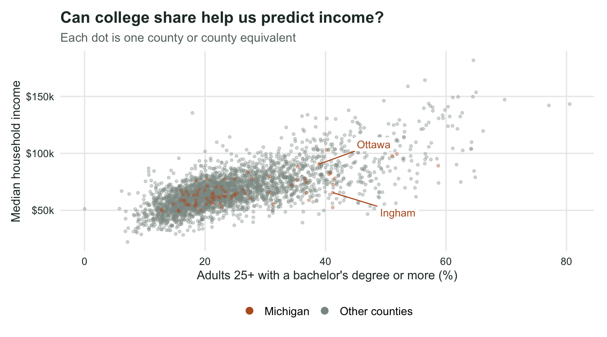
Introduction to Regression
Before we start
Today we will use a regression line to make a prediction, interpret its slope, and inspect its mistakes. By the end, you should be able to use lm(), extract the coefficients, draw the fitted line, and explain what a residual means. You will need those skills for Lab 7.
Keep four questions in mind:
- What does a regression line add to a correlation?
- What does the slope mean in the units of our data?
- How much better is the line than giving everyone the same prediction?
- What can a convincing-looking line still get wrong?
Start with a prediction
Suppose you are helping an organization compare local labor markets. You know the share of adults in a county who have a college degree. How much does that tell you about the county’s household income?
Before looking at the figure, commit to an answer: If we compare counties with more college graduates to counties with fewer, what pattern do you expect? How much variation do you think will be left over?
There is a pattern. There is also a lot of room to be wrong. Regression gives us a way to describe both.
The data and its units
Our source is the U.S. Census Bureau’s 2020–2024 American Community Survey five-year estimates. These estimates combine five years of survey responses. Income amounts are expressed in 2024 inflation-adjusted dollars.
Download the prepared file:
The file contains 3,144 counties and county equivalents in the 50 states and D.C. One county has no usable income estimate; our income examples use the remaining 3,143. All three regressions below use the same rows.
| Variable | Meaning | Units |
|---|---|---|
CollegePct |
Adults age 25+ with a bachelor’s degree or more | Percent, from 0 to 100 |
IncomeK |
Median household income | Thousands of 2024 dollars |
PovertyPct |
Residents below the poverty threshold, among those for whom poverty status is determined | Percent |
MedianAge |
Median age of residents | Years |
Population |
Total population estimate | People |
CountyFIPS |
County identifier | A five-character code, including leading zeros |
One row is a county, not a person. A median describes the middle household in that county. It does not say that every household receives that income. Our unweighted regressions give each county the same weight, so a small county counts just as much as Wayne County.
Load it
library(tidyverse)
library(GGally) # Scatterplot matricesIf you saved the CSV in your data folder, load it like this:
county_raw <- read_csv(
"data/county_education_income_2024.csv",
col_types = cols(
CountyFIPS = col_character(),
StateFIPS = col_character()
)
)You can also load the course copy directly:
county_raw <- read_csv(
"https://ec242.netlify.app/data/county_education_income_2024.csv",
col_types = cols(
CountyFIPS = col_character(),
StateFIPS = col_character()
)
)We keep FIPS codes as text so that a code beginning with 0 keeps its 0. Then we remove rows missing either variable in our first model:
counties <- county_raw %>%
drop_na(CollegePct, IncomeK)
counties %>%
select(County, State, CollegePct, IncomeK) %>%
slice_head(n = 6)# A tibble: 6 × 4
County State CollegePct IncomeK
<chr> <chr> <dbl> <dbl>
1 Autauga County Alabama 29.1 72.5
2 Baldwin County Alabama 33.7 78.8
3 Barbour County Alabama 10.6 46.0
4 Bibb County Alabama 11.7 52.5
5 Blount County Alabama 15.8 64.2
6 Bullock County Alabama 8.12 31.3A basic version of the opening figure takes only a few lines:
ggplot(counties, aes(x = CollegePct, y = IncomeK)) +
geom_point(alpha = 0.2) +
labs(x = "College-educated adults (%)",
y = "Median household income ($1,000s)") +
theme_minimal()
NoteTRY IT: Read the dots before fitting anything
- Filter to Michigan and find Ingham and Ottawa.
- Which has the higher college share? Which has the higher income?
- Would a single prediction based only on education get both right?
Give the line a job
If we knew nothing about a county, we could predict the same value for every county: the average of the county median incomes, about $67,976. This is our baseline. It is not the national median household income.
Knowing CollegePct gives us a chance to do better. The regression line lets the prediction change with education.
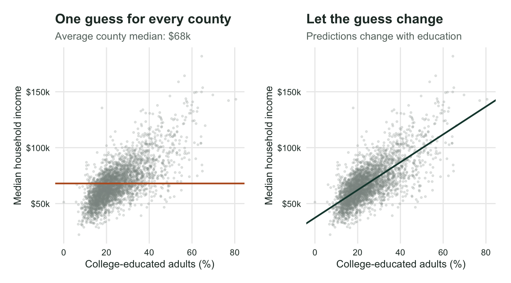
From Tuesday’s lecture, we have a formula for the slope and intercept:
\[ \widehat{\beta}_1 = r\frac{s_Y}{s_X}, \qquad \widehat{\beta}_0 = \bar{Y}-\widehat{\beta}_1\bar{X}. \]
The correlation gives the direction and strength of the linear association. The ratio of standard deviations puts the slope back into the units of Y per unit of X.
We can translate the formulas directly into R:
line_by_hand <- counties %>%
summarize(
mean_x = mean(CollegePct),
mean_y = mean(IncomeK),
sd_x = sd(CollegePct),
sd_y = sd(IncomeK),
r = cor(CollegePct, IncomeK)
) %>%
mutate(
slope = r * sd_y / sd_x,
intercept = mean_y - slope * mean_x
)
line_by_hand %>% select(r, intercept, slope)# A tibble: 1 × 3
r intercept slope
<dbl> <dbl> <dbl>
1 0.720 37.3 1.24The line passes through the point \((\bar{X}, \bar{Y})\). That is why the intercept formula subtracts \(\widehat{\beta}_1\bar{X}\) from \(\bar{Y}\).
Fit the same line with lm()
We do not need to repeat that arithmetic every time. R’s lm() fits the line for us:
education_model <- lm(IncomeK ~ CollegePct, data = counties)
coef(education_model)(Intercept) CollegePct
37.27 1.24 Read the formula from left to right:
IncomeKis the response, orY: the quantity we want to predict.~means “modeled as a function of.”CollegePctis the predictor, orX.data = countiestells R where to find the columns.
We say that income is regressed on education. Swapping the two variables asks a different question and fits a different line. Correlation is symmetric; regression chooses an outcome.
The object education_model stores the fitted model. coef() extracts its coefficients:
b0 <- coef(education_model)[["(Intercept)"]]
b1 <- coef(education_model)[["CollegePct"]]
c(intercept = b0, slope = b1)intercept slope
37.27 1.24 These match our hand calculation. In our units, the fitted equation is approximately
\[ \widehat{\text{IncomeK}} = 37.27 + 1.244\times\text{CollegePct}. \]
The hat means fitted or predicted. We are using a straight line to approximate the conditional mean of income given education. We have estimated that line from data; we have not discovered an exact law for every county.
Interpret it in dollars
A one-unit increase in CollegePct means one percentage point, such as going from 30% to 31%. It does not mean increasing the share by 100%.
Our slope says:
Counties with a college share one percentage point higher have fitted median household income about $1,244 higher, on average in this linear model.
That is an association across counties. It is not the effect of giving one resident a degree.
Example 1: A ten-point difference
Going from 30% to 40% is a ten-percentage-point difference. Multiply the slope by ten:
10 * b1 * 1000[1] 12436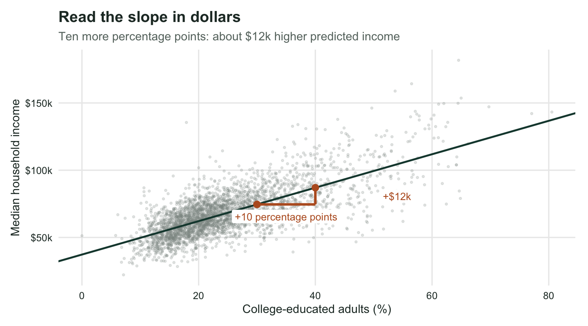
NoteTRY IT: Say what the coefficient means
A classmate writes: “Getting a college degree raises household income by $1,244.”
Explain two problems with that sentence. Then write a sentence that the county regression actually supports.
Example 2: Make a prediction with predict()
To predict income for a county with CollegePct = 30, substitute 30 into the fitted equation:
(b0 + b1 * 30) * 1000[1] 74579For several values at once, use predict(). The new data must have a column with the same predictor name used in the model:
new_counties <- tibble(CollegePct = c(30, 40))
new_counties %>%
mutate(predicted_income_dollars =
1000 * predict(education_model, newdata = new_counties))# A tibble: 2 × 2
CollegePct predicted_income_dollars
<dbl> <dbl>
1 30 74579.
2 40 87015.The model predicts in the units of its response. Since we fit IncomeK, predict() returns thousands of dollars. We multiply by 1,000 to report dollars.
What about the intercept?
The intercept is the fitted value at CollegePct = 0: about $37,271. Before giving it a substantive interpretation, check whether zero is represented in our data. The observed shares in this model range from about 0% to 80.5%.
Zero appears in one county in this snapshot: Loving County, Texas, whose estimated population is just 33. That is little support for a broad story about communities with no college graduates. Here, the intercept mainly helps position the line. In other datasets, zero may be outside the observed range altogether.
Example 3: Change the units, keep the relationship
Now fit the same model with income in dollars instead of thousands of dollars:
dollar_model <- lm(MedianIncome ~ CollegePct, data = counties)
coef(education_model)(Intercept) CollegePct
37.27 1.24 coef(dollar_model)(Intercept) CollegePct
37271 1244 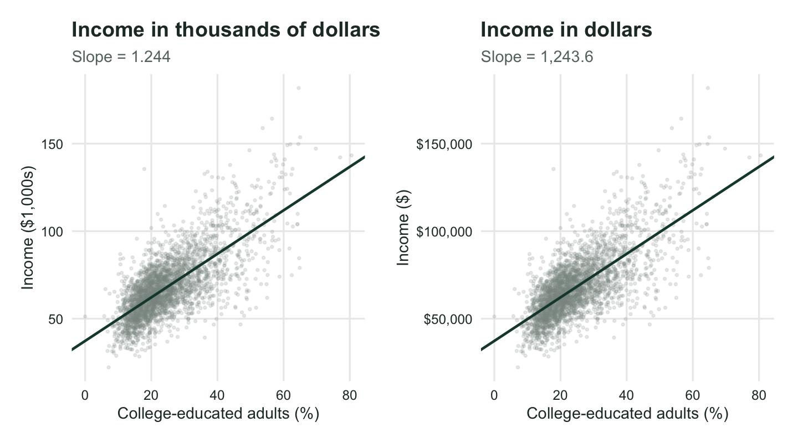
Always attach units to a coefficient. A slope of 1.244 and a slope of 1,243.6 can describe exactly the same relationship.
Look at the mistakes
A prediction is not an observation. For county \(i\), the residual is
\[ e_i = Y_i-\widehat{Y}_i. \]
- A positive residual means observed income is above the line: we underpredicted.
- A negative residual means observed income is below the line: we overpredicted.
R gives us fitted values with fitted() and residuals with resid():
county_results <- counties %>%
mutate(
fitted_income = fitted(education_model),
residual = resid(education_model)
)
county_results %>%
filter(State == "Michigan",
County %in% c("Ingham County", "Ottawa County", "Washtenaw County")) %>%
select(County, IncomeK, fitted_income, residual)# A tibble: 3 × 4
County IncomeK fitted_income residual
<chr> <dbl> <dbl> <dbl>
1 Ingham County 65.5 88.5 -23.0
2 Ottawa County 90.5 85.7 4.84
3 Washtenaw County 89.2 110. -21.1 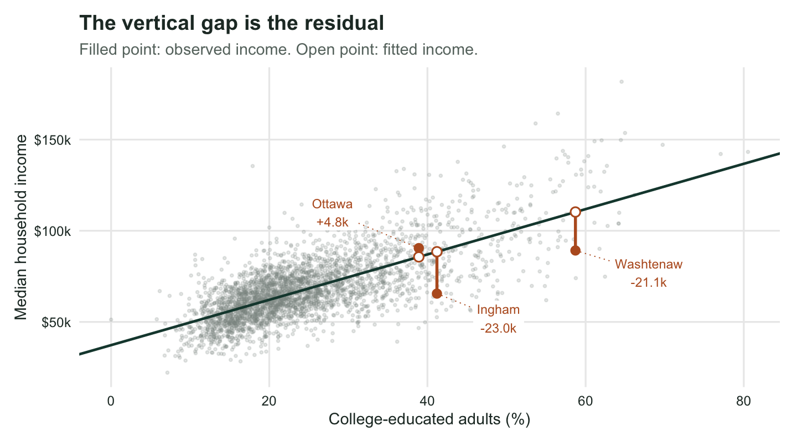
For Ingham, the model overpredicts income. Ottawa is above the line. What might a one-predictor model miss about the kinds of households living in these counties? About their industries, housing costs, or age distributions?
Those are questions for further analysis. The residual by itself does not tell us which explanation is correct.
NoteTRY IT: Find a county the line misses
- Use
county_resultsto find the largest positive residual in Michigan. - Find the most negative residual.
- For each, report the observed value, fitted value, and residual in dollars.
- Explain which county the model underpredicts and which it overpredicts.
Why this line? Squared errors
Residuals above and below a line can cancel. Squaring them makes every miss count positively and gives large misses more weight.
Ordinary least squares, or OLS, chooses the intercept and slope to minimize
\[ \text{SSE}=\sum_{i=1}^{n}(Y_i-\widehat{Y}_i)^2. \]
Here are three candidate slopes. For each slope, we position the line through the sample means, giving it the best intercept for that slope.
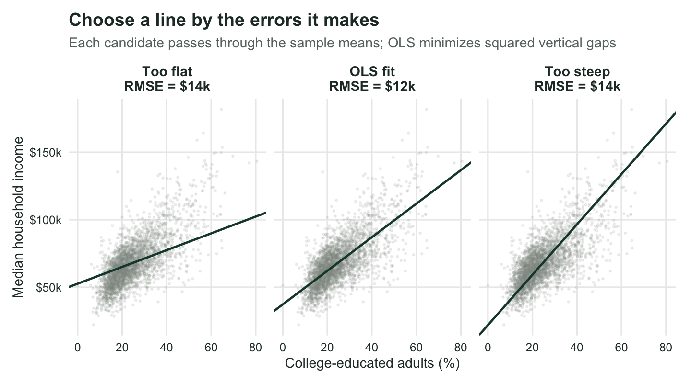
A convenient summary is root mean squared error:
\[ \text{RMSE} =\sqrt{\frac{1}{n}\sum_{i=1}^{n}e_i^2}. \]
The baseline’s RMSE is about $17,772. The education model’s RMSE is about $12,338. These describe errors on the same data used to fit the model. Later we will ask how well a model does on observations it has not seen.
How much variation did we account for?
\(R^2\) compares the line’s squared errors with the baseline’s squared errors:
\[ R^2 =1-\frac{\sum_i(Y_i-\widehat{Y}_i)^2} {\sum_i(Y_i-\bar{Y})^2}. \]
sse_model <- sum(resid(education_model)^2)
sse_baseline <- sum((counties$IncomeK - mean(counties$IncomeK))^2)
1 - sse_model / sse_baseline[1] 0.518summary(education_model)$r.squared[1] 0.518Here, \(R^2\) is about 51.8%. The fitted line reduces squared error by that proportion relative to the baseline.
It does not mean that education causes that proportion of income, or that this proportion of counties is predicted exactly. For simple OLS with an intercept, \(R^2\) also equals the squared sample correlation.
Two pictures worth checking
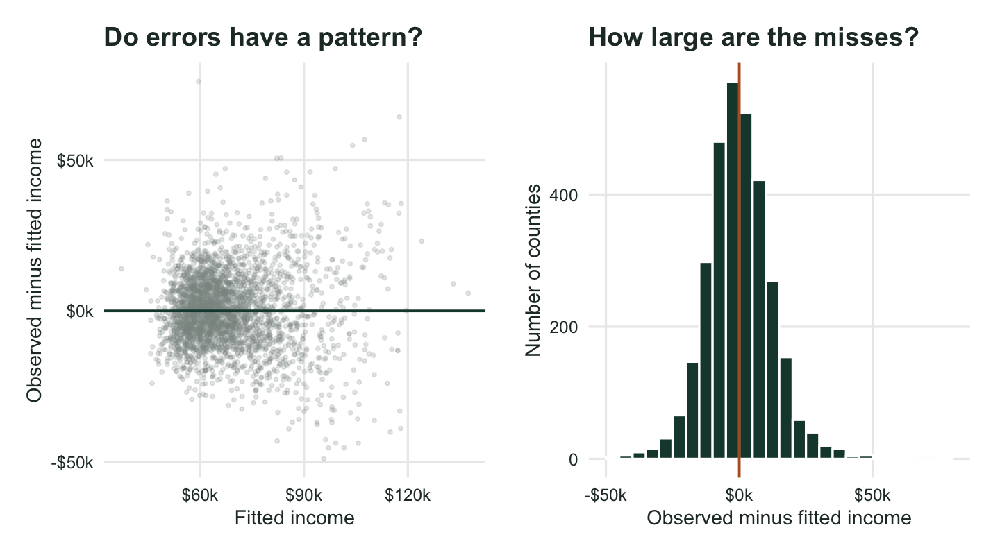
A line gives us an average tendency. These pictures remind us how much individual counties can differ from that tendency.
Two more worked examples
Keep the outcome and the counties fixed. Change only the predictor.
Example 4: A negative slope
What do you expect if we regress median household income on the poverty rate?
poverty_model <- lm(IncomeK ~ PovertyPct, data = counties)
coef(poverty_model)(Intercept) PovertyPct
98.80 -2.17 A one-percentage-point higher poverty rate is associated with about $2,167 lower fitted median household income.
Income and poverty are related descriptions of local economic conditions. This is a descriptive comparison, rather than a forecast made before we know anything about income.
Example 5: A predictor that tells us little
Maybe older counties have higher incomes because residents have had more time to accumulate earnings. Maybe retired households have lower incomes. Let’s check:
age_model <- lm(IncomeK ~ MedianAge, data = counties)
coef(age_model)(Intercept) MedianAge
82.383 -0.344 summary(age_model)$r.squared[1] 0.011There is a fitted slope. There is also very little reduction in squared error. R will fit a line even when the predictor is not especially useful.
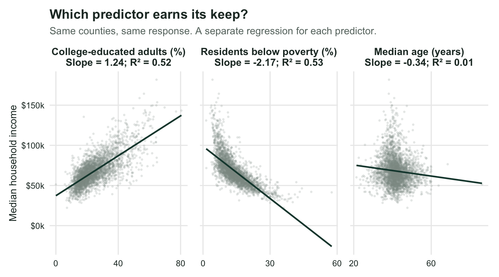
Notice the poverty model’s far-right tail: the fitted line drops below zero even though the observed county incomes are positive. It misses that part of the relationship badly. A respectable \(R^2\) does not guarantee that every prediction is sensible.
NoteTRY IT: Compare the models
- Which model has the larger \(R^2\): education or poverty?
- Does a negative slope mean a model is bad?
- Would comparing the absolute slopes of the age and education models tell us which is more useful? Check their units before answering.
Explore several relationships
When we have several candidate variables, a scatterplot matrix gives us a first look at all their pairwise relationships.
county_numeric <- counties %>%
select(CollegePct, IncomeK, PovertyPct, MedianAge)
ggpairs(
county_numeric,
columnLabels = c("College (%)", "Income ($1,000s)", "Poverty (%)", "Median age"),
lower = list(continuous = wrap("points", alpha = 0.12, size = 0.4)),
upper = list(continuous = wrap("cor", stars = FALSE, size = 4))
) +
theme_minimal(base_size = 12)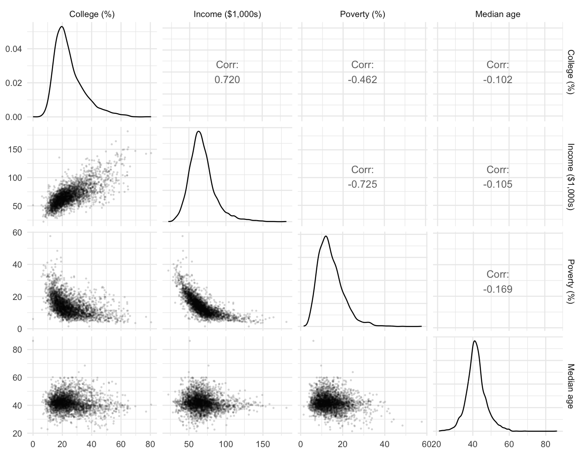
Read one pair at a time. The diagonal describes each variable’s distribution. The off-diagonal panels show pairs of variables. The upper panels summarize those pairs with correlations.
Don’t feed an ID code into cor() just because R stored it as a number. FIPS codes identify places. They are not measurements of how much “county” a place has.
A compact correlation picture
county_cor <- cor(county_numeric)
round(county_cor, 2) CollegePct IncomeK PovertyPct MedianAge
CollegePct 1.00 0.72 -0.46 -0.10
IncomeK 0.72 1.00 -0.73 -0.10
PovertyPct -0.46 -0.73 1.00 -0.17
MedianAge -0.10 -0.10 -0.17 1.00A correlogram puts those numbers into a heatmap:
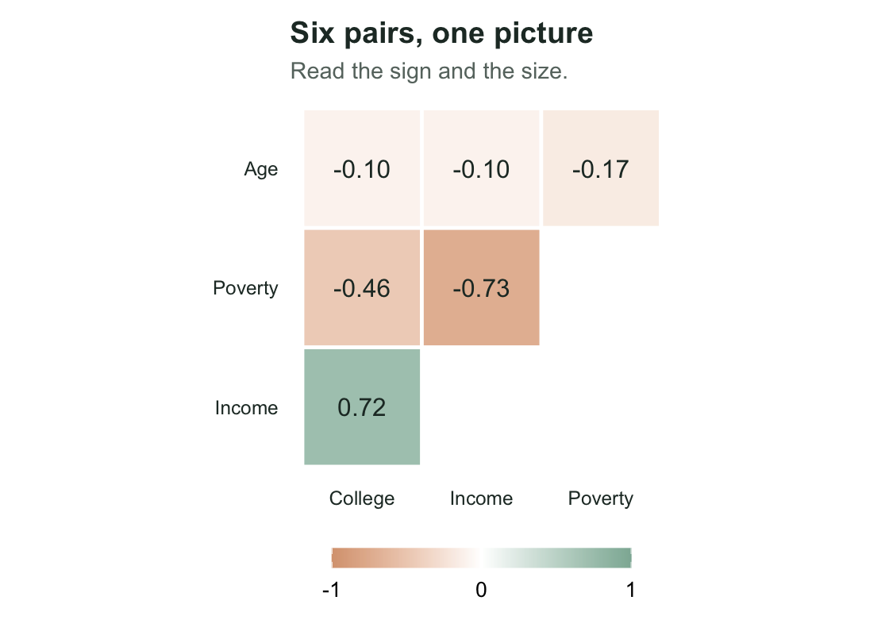
Show me how to build the heatmap with ggplot
The correlation matrix needs to become a long table with one row per pair. as.table() preserves the row and column labels; as.data.frame() puts them into columns.
cor_long <- as.data.frame(as.table(county_cor)) %>%
rename(variable_x = Var1, variable_y = Var2, correlation = Freq) %>%
filter(as.integer(variable_x) < as.integer(variable_y))
ggplot(cor_long, aes(variable_x, variable_y, fill = correlation)) +
geom_tile(color = "white") +
geom_text(aes(label = round(correlation, 2))) +
scale_fill_gradient2(low = "#D9A27F", mid = "white", high = "#8DB4A3",
limits = c(-1, 1)) +
coord_equal() +
labs(x = NULL, y = NULL) +
theme_minimal()The ordering check keeps one triangle and removes the diagonal. The numbers and signs matter more than choosing an elaborate plotting style.
Four ways to fool yourself
These are short examples to return to as you work. We do not need a complicated model to make a complicated mistake.
1. A small correlation does not rule out a pattern
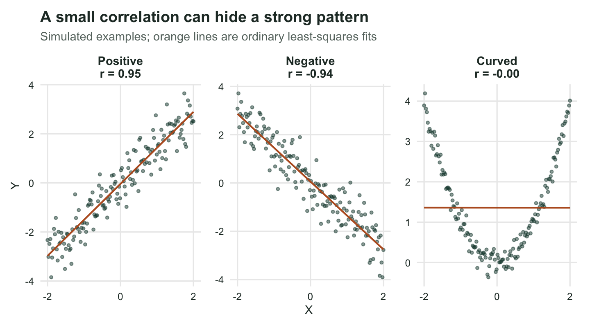
Correlation summarizes a linear relationship. Always look at the scatterplot before deciding that a small correlation means there is nothing to learn.
NoteTRY IT: Predict before calculating
For the U-shaped example, imagine increasing X from a very negative value toward zero, and then from zero toward a very positive value. How does Y change on each part of the picture? Why does one straight slope struggle?
2. A large residual is not the same as influence
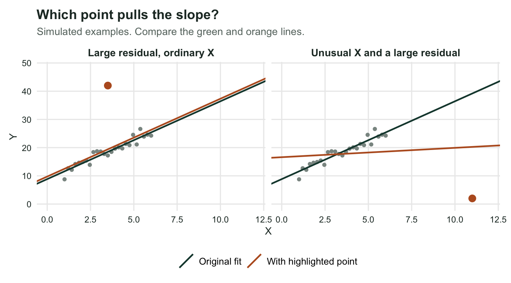
When you see an unusual point, inspect it. Check the units, the source, and what the observation represents. “The regression looks nicer without it” is not a data-cleaning rule.
3. Extrapolation is easy to request and hard to defend
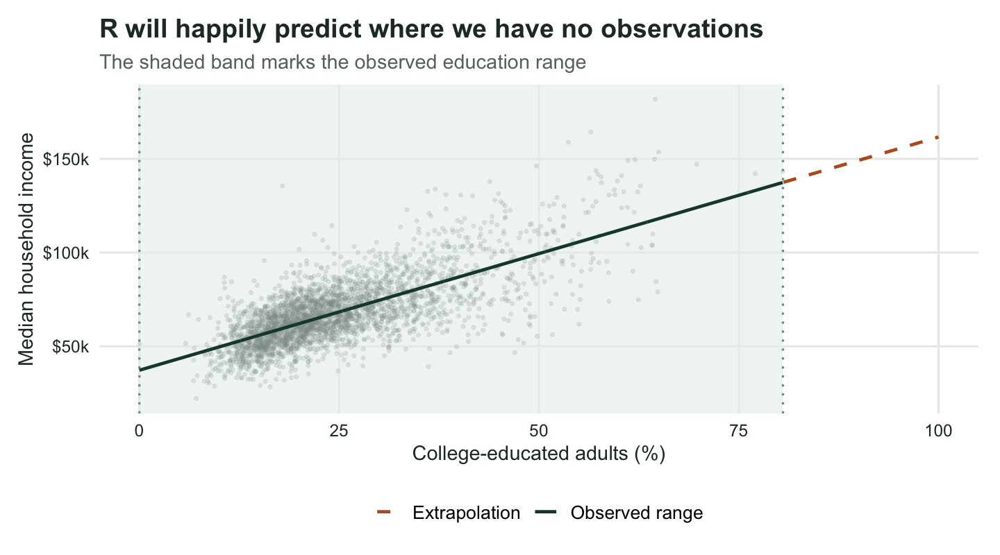
Before reporting a prediction, compare the requested X with the X values used to fit the model:
range(counties$CollegePct)[1] 0.0 80.5Also ask whether the new observation is comparable to the ones we used. A county-level model is not a salary calculator for an individual graduate.
4. Our coefficients depend on the sample
Recall last week’s discussion of sampling variation. A slope is calculated from the observations we happen to use. Change those observations and the estimated slope changes.
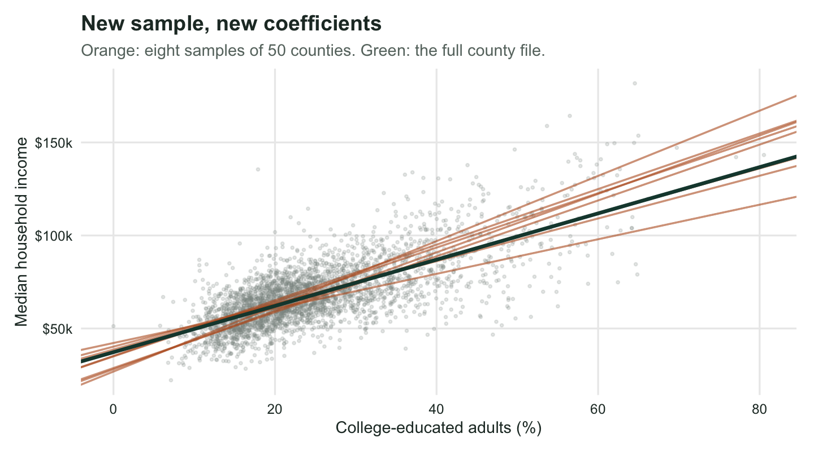
You can produce one of those smaller-sample fits yourself:
set.seed(15)
small_sample <- counties %>% slice_sample(n = 50)
small_model <- lm(IncomeK ~ CollegePct, data = small_sample)
coef(small_model)(Intercept) CollegePct
31.75 1.52 coef(education_model)(Intercept) CollegePct
37.27 1.24 We will return to uncertainty about coefficients. For now, remember that a coefficient is an estimate built from data.
Your turn, then Lab 7
NoteTRY IT: Put the pieces together
Use PovertyPct as the predictor and IncomeK as the response.
- Draw the scatterplot before fitting anything.
- Fit the model with
lm()and save it. - Extract the intercept and slope with
coef(). Write a sentence interpreting the slope with its units. - Add the fitted line with
geom_abline(), using the two coefficients you extracted. - Use
predict()for poverty rates of 10% and 20%. Convert the predictions to dollars. - Find the county with the largest positive residual. Explain what the positive sign means.
Here is the pattern for drawing a line from a saved model. Adapt it to your poverty model:
ggplot(counties, aes(CollegePct, IncomeK)) +
geom_point(alpha = 0.2) +
geom_abline(
intercept = coef(education_model)[["(Intercept)"]],
slope = coef(education_model)[["CollegePct"]],
color = "#18453B"
) +
theme_minimal()geom_smooth(method = "lm", se = FALSE) would draw the same line. Saving the model gives us the coefficients, predictions, and residuals as well.
For Lab 7, the data changes to Ames home sales. The workflow carries over: inspect the variables, visualize their relationships, fit the requested model, extract its coefficients, and find a large positive residual. Keep track of which variable is on each side of ~ and what units the response uses.
One last sentence to have ready before you leave: What is the difference between a pattern across counties and the effect of sending a person to college?